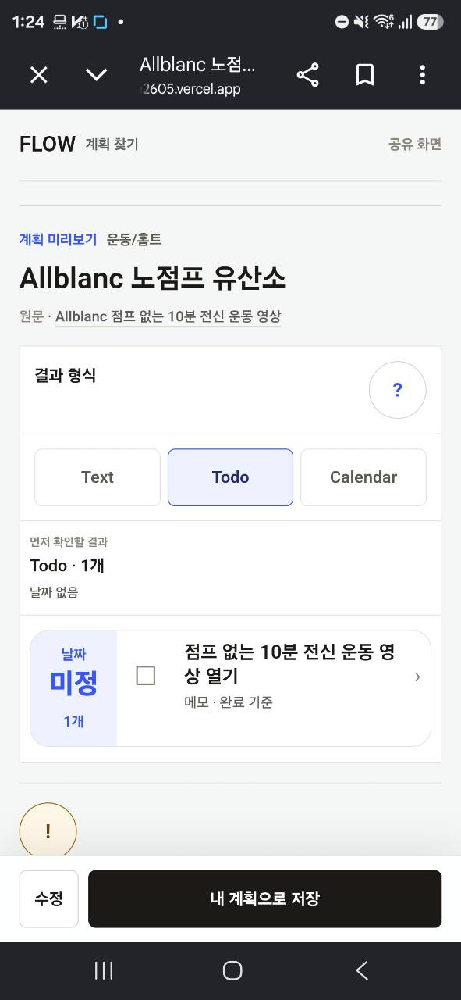

FlowMe · public editor follow-up · 2026-08-12
Flow Map은 안 보이게,
공개 일반 Flow와 실행 가능한 단일 계획형 Flow Map이 서로 다른 수정 화면을 열던 문제를 바로잡았습니다.
사용자는 이제 하나의 Plan / Item 편집 문법 만 배우고, Map·version·child·source 식별자는
저장 안전성을 위해 내부에 그대로 남습니다.
LOCAL IMPLEMENTATION
AUTOMATED QA
OBSERVED USERS 0
MERGE / PRODUCTION NOT AUTHORIZED
LOCAL IMPLEMENTATION 현재 worktree의 미게시 후보입니다. Production 변경을 뜻하지 않습니다.
AUTOMATED QA 스크린샷·테스트·빌드 결과는 내부 QA이며 실제 사용자 관찰과 분리합니다.
OBSERVED USERS 0 이번 변경을 실제 사용자가 수행한 관찰 세션은 아직 없습니다.
DRAFT PR / PREVIEW AUTHORIZED 커밋·Push·Draft PR·Preview는 승인됐습니다. Merge와 Production은 별도 승인 전까지 진행하지 않습니다.
기존 피드백
제품 결론
모드 경계
UI 캡처
저장 규칙
증거·사람 검토
01 · Feedback chain
두 번의 불일치 지적이
공개 화면과 저장 후 화면에서 따로 보였던 문제는 모두 “콘텐츠 출처가 편집 UX를 결정한다”는 같은 구조에서 나왔습니다.
피드백 → 결정
1 공개 화면 세대 차이 /f와 /flow-maps의 결과·수정 UI가 달랐습니다.
2 저장 후에도 불일치 /my 상세 편집 역시 저장 출처별로 달랐습니다.
3 Flow Map 의미 재검토 현재 콘텐츠에서 별도 제품 개념으로 보일 이유가 있는지 물었습니다.
4 사용자-facing 평탄화 표면은 Flow 하나, 내부 identity는 보존하는 방향을 확정했습니다.
“계획 수정 부분이 아직 Flow마다 다른데, 이게 맞아?”
공개 /f와 /flow-maps 비교에서 나온 직접 피드백
“현재 콘텐츠에선 Flow Map이 사실 의미 없지 않아?”
이번 제품 경계 변경을 결정한 후속 질문

직접 피드백 캡처 · 일반 Flow /f는 새 결과·수정 문법을 사용하고 있었습니다.
직접 피드백 캡처 · Flow Map
화면 원인 제거 Map 전용 계획 수정 sheet와 별도 안내를 사용자-facing 제품 문법에서 제거했습니다.
선택의 의미 보존 서로 대안인 여러 child는 합치지 않고, 하나를 고르는 gateway로 남겼습니다.
저장 안전성 보존 Map/version/child/Item identity와 기존 persistence transaction은 바꾸지 않습니다.
연결 범위: 앞선 내 계획 편집 통합은 저장 후 /my lifecycle을 다뤘고,
이번 후속은 저장 전 공개 /f와 /flow-maps의 Plan / Item 수정 surface를 다룹니다.
두 작업은 같은 편집 문법을 공유하지만 저장 주체와 검증 범위는 구분합니다.
02 · Product decision
사용자는 Flow 하나를 보고,
시각적 평탄화는 데이터 병합이 아닙니다. 같은 편집기를 쓰되 최종 저장은 원래 origin의 transaction으로 돌아갑니다.
One public Plan One Item editor Origin adapter
URL과 콘텐츠 제목을 가리면 같은 수정 작업
계획 이름, 지원되는 기준 입력, 포함·순서, Item 진입, 적용·취소, Escape, browser Back, focus 복귀가 같은 shell과 controller를 사용합니다.
제품 결론
입구
공개 콘텐츠
일반 /f 또는 호환 /flow-maps URL에서 시작합니다.
→
사용자-facing
Flow 하나
단일 실행 계획은 출처와 관계없이 같은 결과·수정 shell을 보여 줍니다.
→
행동
공통 Plan / Item 편집기
Item은 Plan draft에 반영하고, Plan은 공개 session draft에 적용합니다.
내부에 남는 것
Map ID · Map version · child Flow ID · canonical Item ID · effective snapshot · persistence / bridge record · 기존 storage key
03 · Mode boundary
모든 Map을 억지로
현재 콘텐츠는 세 가지 역할로 나눕니다. 편집기는 실제로 실행할 계획이 하나일 때만 열립니다.
사용자 화면 일반 Flow 결과 + 공통 Plan / Item 편집
대표 경로 /flow-maps/middle-school-math-1
내부 보존 Map/version/child/Item identity와 기존 저장 transaction
사용자 화면 child 선택만 제공하고 Map 편집기는 열지 않음
선택 다음 canonical child /f/[slug]로 이동
조정 위치 선택한 /f의 공통 Plan / Item 편집기
사용자 화면 보류 이유와 허용된 읽기 행동만 표시
노출하지 않음 수정기, 조정 CTA, 저장 가능한 듯한 control
재개 조건 원문 행·위험·사용 권한 등 필요한 검토 완료
04 · Fresh UI captures
같은 편집기인지
모든 이미지는 현재 worktree의 fresh local UI 캡처입니다. 정적 목업이나 observed-user evidence가 아닙니다.
390 × 844 /f기준
일반 Flow · Plan 수정
계획 이름, 지원되는 기준 입력, 포함·순서, Item 진입과 하단 적용 행동을 확인합니다.
보여 주는 것 공통 Plan shell의 모바일 기준
증명하지 않는 것 실제 사용자 이해·완료율
390 × 844 save_all평탄화
중1 수학 · 같은 Plan 수정
Map 전용 sheet 대신 일반 Flow와 같은 필드 계층·CTA·닫기 위치를 사용합니다.
보여 주는 것 단일 계획형 Map의 시각적 Flow 평탄화
증명하지 않는 것 내부 identity와 reload 지속성
390 × 844 Item
Map 출처도 같은 Item 편집
제목과 개인 메모를 Plan draft에 반영합니다. 이 출처가 지원하지 않는 날짜 입력은 노출하지 않습니다.
CTA 의미 Item 적용 = 부모 Plan draft 갱신
저장 쓰기 이 단계의 persistent write는 0
390 × 844 dirty Back
취소·Escape·Back의 한 규칙
변경이 있으면 같은 discard 확인을 거치고, 계속 수정하면 draft와 focus를 유지합니다.
계속 수정 draft·focus·editor history 유지
변경 버리기 정확한 opener·scroll로 복귀
390 × 844 choose_childOPIc
2주와 1달은 합치지 않습니다
OPIc는 두 계획을 함께 저장하는 Map이 아니라, 필요한 학습 기간 하나를 고르는 gateway입니다.
선택 2주 또는 1달 canonical child 하나
다음 단계 선택 child의 /f에서 공통 편집
1440 × 1000 save_all
데스크톱도 같은 작업 계층
큰 화면에서는 공개 결과 맥락을 남긴 채 오른쪽 workspace로 열리지만 필드와 transaction 의미는 모바일과 같습니다.
반응형 차이 전체 sheet와 우측 workspace의 composition
같아야 할 것 필드·CTA·dirty·focus contract
05 · Edit and save contract
수정 중에는 초안만,
같은 화면을 쓰는 것만으로는 충분하지 않습니다. 적용 시점·Back·focus·저장 소유자까지 하나의 규칙으로 맞춥니다.
1 계획 수정 열기 origin snapshot으로 session draft 생성
2 Item 수정 제목·개인 메모를 부모 draft에만 반영
3 Plan 변경 적용 공개 session의 effective draft 갱신
4 공개 결과 확인 persistent storage bytes는 그대로
5 내 계획으로 저장 기존 origin transaction에서 한 번 확정
화면에서는 덜 보이고, 저장에서는 그대로 지키는 것
Flow Map 전용 설명·도움말·지원하지 않는 필드는 덜어냈지만 복구와 정합성에 필요한 경계는 제거하지 않았습니다.
같은 close 문법 Cancel, X, backdrop, Escape, browser Back이 clean/dirty 규칙을 공유합니다.
정확한 focus 복귀 Item은 진입한 row로, Plan은 공개 화면의 수정 opener로 돌아갑니다.
제외 항목의 개인값 잠시 제외한 Item의 private override도 원래 canonical ID에 남습니다.
Map 내부 identity Map/version/child/Item과 persistence bridge는 기존 owner가 계속 관리합니다.
06 · Evidence and human review
자동 QA가 말할 수 있는 것과
화면 캡처는 시각 상태, 테스트는 규칙과 저장 경계를 확인합니다. 둘 다 실제 사용자가 이해하고 성공했다는 증거는 아닙니다.
LOCAL IMPLEMENTATION 현재 branch/worktree 안의 미게시 변경과 fresh local UI
AUTOMATED QA focused unit/component/E2E, persistence 회귀, responsive, build, docs gate
OBSERVED USERS 0 실제 사용자 수행·이해·완료·재사용 관찰은 아직 없음
MERGE / PRODUCTION GATED Draft PR과 Preview까지만 게시하며 Merge·Production·Production smoke는 수행하지 않음
AUTOMATED QA가 확인할 것
/f와 단일 계획형 Map의 같은 Plan / Item shell·CTA·history 규칙Item 반영·Plan 적용·discard 전 persistent write 0
최종 저장과 reload 뒤 제목·포함·순서·개인 메모 복원
Map/version/child/Item ID, storage key와 transaction owner 보존
390 / 1024 / 1440에서 가로 overflow·clipping 없이 action 도달 가능
QA 원장 보기
사람에게 직접 물어야 할 것
Flow와 단일 계획형 Map을 같은 방식으로 수정한다고 자연스럽게 느끼는가?
OPIc 2주/1달, 결혼 준비 2종, Allblanc 영상 선택이 “대안 하나 고르기”로 이해되는가?
지원하지 않는 날짜 입력이 없는 것을 오류나 기능 누락으로 오해하지 않는가?
취소와 Back 뒤 예상한 위치·항목으로 돌아왔다고 느끼는가?
현재 observed-user session은 0 입니다.
Source / evidence ledger
무엇을 근거로 썼는지 남깁니다
현재 repo, 직접 피드백, 이전 산출물, 구현 코드와 자동화 증거를 섞지 않고 출처별로 표시합니다.
구분 근거 이 보고서에서 사용한 판단 경계
직접 피드백 세션 019fac1b-1679-78f2-8280-7ba63f6ebee9와 이번 후속 대화 공개 편집 UX가 Flow마다 다르고, 현재 콘텐츠에 별도 Flow Map 개념의 사용자 가치가 약하다는 문제 정의 사용자 방향·문제 증거이며 구현 완료 증거는 아님 이전 산출물 내 계획 편집 UX 통합 UI 캡처 리뷰 저장 후 /my에서도 origin별 편집 불일치가 있었다는 연결 맥락 이번 공개 편집 후속과 범위를 분리해 해석 제품 계약 Public Plan/Item Edit Surface Unification spec 시각적 평탄화, 세 모드, session draft, Back/focus, identity 보존 계약 Owner-approved 로컬 구현 spec, publication 권한 아님 공통 UI PublicFlowAdjustmentPanel · SourceBackedFlowMapSaveButton 일반 Flow와 Map adapter가 공유하는 Plan / Item surface와 transaction 경계 코드 존재는 사용성 검증이 아님 콘텐츠 모드 source-backed curated definitions OPIc·결혼 준비·Allblanc의 choose_child 경계와 child identity 콘텐츠 정의 시점의 현재 repo 근거 자동 QA 전용 E2E · snapshot/persistence tests 공통 shell, dirty Back/focus, responsive, session-only write, save/reload/identity 회귀 AUTOMATED QA이며 OBSERVED USERS를 늘리지 않음 캡처 원장 capture manifest 각 이미지의 route, viewport, 상태와 증명 범위 fresh local UI 캡처, Production 증거 아님
P0 · 지금 막아야 할 것
URL·제목을 가렸을 때 일반 Flow와 단일 계획형 Map의 Plan / Item 편집 문법이 달라 보이지 않는가?
dirty Cancel·Escape·Back에서 확인 없이 변경이 사라지거나 route가 이탈하지 않는가?
OPIc의 2주와 1달이 함께 저장되는 하나의 과정처럼 오해되지 않는가?
review_hold에 수정·저장 가능한 듯한 control이 남아 있지 않은가?
P1 · 다음 사용성 확인
390px 긴 Item 목록에서 포함·순서 조정과 하단 action에 무리 없이 도달하는가?
Map Item의 날짜 입력 미지원이 기능 누락이 아니라 capability 차이로 받아들여지는가?
Item 적용 뒤 원래 row, Plan 닫기 뒤 수정 opener로 돌아온 초점이 자연스러운가?
1024px와 1440px workspace가 원문·결과 맥락을 충분히 남기는가?
P2 · 관찰 후 다듬기
“Flow Map”이라는 내부 용어가 설명·label·toast에 불필요하게 남지 않았는가?
결혼 준비와 Allblanc도 대안 선택 gateway로 즉시 이해되는가?
출처 link와 주의 문구가 실행 흐름을 방해하지 않으면서 필요한 순간에 발견되는가?
실제 세션에서 선택→수정→저장→reload까지 망설임과 되돌림 이유를 기록했는가?
현재 상태: LOCAL IMPLEMENTATION · AUTOMATED QA는 내부 증거 · OBSERVED USERS 0 · DRAFT PR/PREVIEW AUTHORIZED · MERGE/PRODUCTION GATED
캡처 범위: 일반 Flow 모바일 Plan, 단일 계획형 Map 모바일 Plan/Item/dirty Back, OPIc 모바일 child 선택, 단일 계획형 Map 데스크톱 Plan의 fresh local UI 6장.
캡처 메타데이터: route, viewport, 상태, 생성 시점과 파일 해시는 capture manifest 에 기록합니다.
정확성 경계: 이 문서는 로컬 미게시 검토 산출물입니다. 스크린샷·자동 테스트·빌드는 Production 배포나 observed-user validation을 뜻하지 않습니다.